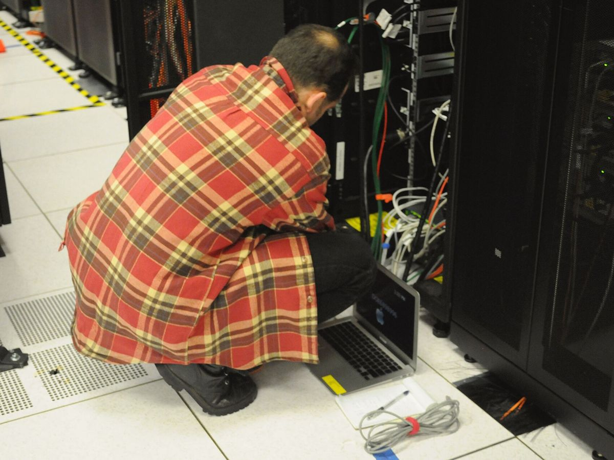

Reliable supply for every stage of the IT service ecosystem. Our B2B supply model is designed around recurring demand, product availability and consistent fulfilment.
Supporting Annual Maintenance Contract operators with regular hardware and replacement component requirements to help maintain service continuity.
Helping authorised and independent service centres source components for repair, replacement and maintenance operations.
Supporting system integrators with hardware components and memory products required for system deployment, upgrades and project-based procurement.
Providing a dependable sourcing and supply channel for businesses managing regular hardware procurement and distribution requirements.
Supporting corporate procurement requirements through structured product sourcing, availability coordination and bulk supply.
Supporting infrastructure-related requirements with server memory and relevant IT hardware components.
We understand that our customers often operate on tight service timelines and recurring procurement cycles.
Our objective is to simplify their sourcing process by providing access to a broad product portfolio, dependable availability and a responsive business team.
Your supply requirements are our priority.

Connect with our team for business enquiries, product availability and bulk requirements.
Get a Quote →